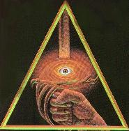

The Heist Christine Morgan (vecna@eskimo.com) Author's note: the characters from the show Gargoyles are the property of Disney and are used here without their foreknowledge or consent. This story is a sequel to "Passions."
Falling! He twisted catlike and slammed into the unyeilding earth on his shoulder and side. The heavy backpack pulled, so he struggled out of it and flopped onto his back, spreadeagled, staring up at the black sky framed in the branches of trees. Brilliant stars gleamed in the blackness, stars the likes of which he'd never seen before. The beauty of the view did little to ease his pain. He massaged his shoulder and uttered a heartfelt groan of profound unhappiness. Laying there, aching, surrounded by creepy night sounds, he realized just how long it had been since he had played cards, and felt a sharp pang of homesickness. Homesickness not for any one place but anyplace where chips and cards and money were moved in the ritual that was poker. Be it a fancy resort casino with expensive drinks or a cheap folding table under a haze of smoke in someone's garage, he missed it with desperate longing. But his hobby/habit/passion of poker had taken a backseat to his new job, that of professional thief. Funny how easily it had happened. First a man is living as honest a life as he can, then he starts losing so he cheats just a little at cards, and only against those who deserve it, then he's righteously stealing from his no-good cousin, and from there it was a rapid slide into his current predicament. Vito Draconi rolled into a sitting position and unzipped his backpack. Thickly padded with foam inserts to protect the items within, he'd have to roll over it with a tank to damage anything, but he still went over all of the equipment carefully in the glow of a penlight. The drop hadn't been on the map, dammit! That was the problem with maps. They, being man-made, did a fine job at showing the details of other manmade things. The building schematics rolled up in the outer pocket were precise down to the millimeter, but the map of the surrounding area did not reflect sudden changes in terrain. Such as the embankment from which he'd just fallen. Looking around, he saw that he'd barely missed a fallen log with plenty of sharp poky bits eager to gouge his eyes or stomach or other parts. At least he was still far enough from the complex so that no one had heard his hard landing. He gingerly moved all of his limbs. When satisfied that he hadn't done any real harm to himself, he got up and got his bearings and got his rear in gear again. He picked his way through the woods, grumbling to himself at how long it was taking but knowing he couldn't risk another headlong plunge. He'd spent his whole life in the cities, and while he prided himself on his stealth, he was and would never be a good Boy Scout. This outdoor shit bugged him no end. To think, New York was only a few hours' drive away. He might as well have been in the heart of the Canadian wilderness. Aha! A sign of civilization! A bridle path, clean and well- maintained. He checked his map and saw that he was coming up on the west side of the complex, near the school. The building he wanted was on the far side, but Vito figured he'd have better luck sneaking through the complex than trying to make his way all the way around in the woods. He followed the path, reasoning that none of the students would be taking a midnight riding lesson, and sure enough it soon led him to the large whitewashed stables. He crawled up a rise to get a look at the school grounds. Spotlights, concealed amid dense shrubs, illuminated a sign with letters carved into wood and painted with silver. It read simple: The Sterling Academy. The sign was beside a nice road which led to a gate in the fence (which ringed the complex at a radius of about five miles, and which Vito had already gotten over using luck, ingenuity, and good steel climbing cable). The gatehouse was the typical small kiosk familiar to parking lot attendants everywhere. It was dimly lit within, and Vito's superb distance goggles could make out the guard's nametag ("Vinnie") and the title of the book he was reading even at this distance. It was a scholarly and thought-provoking tome entitled "Spanking Cheerleaders," and Vito was sure it wasn't on the Academy's approved reading list. The school for rich kids certainly looked posh enough to satisfy the most demanding snooty parent. The student garage probably was crammed with Porsches and Ferrarris and other rich- kid toys, and Vito had certainly never seen a satellite dish on top of the dorms of any other colleges. He bypassed the twin dorms, one for girls, one for boys, and he just bet that the secret passage between the basements wasn't part of the tour or the brochures that Mommy and Daddy saw. It showed up on Dominique's blueprints, though, and he wondered again just how she'd gotten all the info. He didn't let that trouble him for long. She had the blueprints, that was the important part. If they were wrong, she wouldn't get her prize. Oh, and he'd probably be in jail or in the morgue, but somehow he didn't think that mattered as much to Dominique as the prospect of missing out on the apple. He was a tool to her, which she admittedly used in creative ways. The thought of some of those creative ways made him grin, but he hastily put it out of his mind. There would be time for that later, time for more of the sessions which couldn't really be called lovemaking or even an affair. Dominique's bed was an arena of combat, and Vito counted himself lucky to have thus far escaped with only a few scratches, bite marks, and bruises. He paused behind the poolhouse with the retractable roof and checked his map again. Almost there. He should be able to see the wall any minute -- there! The students were told that the rambling old manor belonged to one of the descendants of the school's founder, which was true enough, and that it was being restored for use as a museum of classical art, which was a lie. The students didn't know about what Vito had dubbed "The Batcave," a tunnel which led to the manor basement from a secret access road. Vito had considered coming that way, but the security was very intense and he would have had to have passed through most of the other rooms to get to the one he was looking for. He was hoping to use it as an emergency escape, but was also hoping he didn't need it. The manor was surrounded by another wall, this one of stone ten feet tall. Or so it seemed. The stone was actually hollow, with electrified core rods inside, the whole thing covered with a copper- fleck paint to conduct the charge. If any students tried to go over it on a dare, Vito was sure they never did it twice. He wondered how the administration explained _that_ to any singed students. Having no real urge to get electrocuted, Vito used his cable pistol to fire a grapnel into a strudy branch high on the other side of the fence. He was careful while doing so to keep his cable off of the stones, since the metal would zap him quite nicely. Then, the winch in his belt acting like the recoil mechanism of a tape measure, he let himself be zipped over the wall and solidly embraced the tree trunk. Feeling more and more like Batman with his special gear and utility belt and all, Vito grinned at the image he must have projected. A dilettante poker-player making at catburglary. What would Nana say? Following his predetermined course and plan exactly, using the special equipment just as he'd planned, Vito made his way through the manor's security like a chef dissecting an onion layer by layer. He had some bad moments with the motion detectors and the heat sensors, and once a laser grid (which hadn't been on the damn map!), but overall he enjoyed the challenge. It wasn't as much fun as, say, bluffing two pair into a huge winning hand, but it was exciting. The final room was the hardest, because it wasn't guarded only by devices. Here there were living guardians, and the possibility of human error went up because living things were so much more unpredictable. The guard dogs were huge, crossbreeds of German Shepherds and iron-grey mastiffs. He had a canine tranqulizer, not the typical dart but a spray can which would knock the dogs out for hours but leave no traceable chemical residue. The problem was the collars the dogs wore, which would set off alarms at any sudden changes in the dogs' metabolic state. He had a "little black box" which should, and that was the key word, _should_, be able to duplicate the signals, but first he'd have to use it to record the dogs' normal patterns. That meant getting close enough to take the reading without getting noticed. To make things even more fun, the dogs patrolled a rotunda, and suspended from the ceiling was a glassed-in cubicle where a human watchman was posted. Dominique had been able to get him a device that would emit disorienting waves, effective even through glass, which should do the trick, but he had to do that while not alarming the dogs, and he couldn't drug the dogs first because that would alarm the man. To top it all off, the door was fitted with an electronic lock that made the one on cousin Antonio's safe look like the lock on a teenager's diary. He'd had to do some dramatic modifications to his portable computer, and wasn't one hundred percent sure it would prove sufficient. It was quite a challenge. If he got caught this far in, he'd be dead for sure. The ultimate high-stakes game. "Deal me in," Vito Draconi whispered, and went to work. * * When he saw her, he knew at once that she was in a state of high piss-off. Small wonder. He was two hours late getting back to the rendezvous point. It was surprising that she hadn't left without him. He limped toward the car, ready to endure any amount of verbal abuse just to be able to set down the heavy pack and get off his bad leg. "Dominique," he called. She whirled, fists on her hips, dark red hair loose over the shoulders of her khaki blouse. She was dressed like she was expecting to go on safari or something, very fetching, but Vito was in no condition to be fetched. And she was in no mood for it either, judging by the way she sprang toward him. Not to greet him with a hug and a loving, "I was _so_ worried!" No, she came at him like she intended to rip his explanation from his flesh. "Where have you been?!" "Sorry I'm late. There were complications." "Incompetent fool!" She swung at him. Verbal abuse, he was ready for. But he was tired, he was in pain, and one blow, no matter how slight, might just be the last straw to knock him unconscious. So he brought up his arm and deflected her hand. The look on her face went beyond shock, as if nobody had ever balked her before. "I said I was sorry," he said. "Your maps didn't show some of the security measures. Not the laser grid, and not the big stone ball. Indiana Jones, I am not, but I sure did feel like him while running for my life from that thing. It set off alarms. I was pursued. I had to lose them in the woods and damn near lost myself. Plus, I've been dog-bit and shot, so if you don't mind, I'd rather continue this in the car." "Did you get it?" she demanded, without so much as a sympathetic noise for his wounds. "Don't toy with me, Vito, or I'll have your head for a centerpiece!" "I got it." "Give it to me!" He shook his head, bringing that amazed expression to her face again. "When we get back to New York. Let's hurry; they'll realize I got away soon and be combing the countryside." "You dare!?!" "Yes, ma'am." He went around her and threw his backpack in the trunk. When he sank into the leather seat, his whole body gave a sigh of relief. She stayed where she was for a moment, probably composing herself so she wouldn't get his blood all over her upholstery. Too bad, he was still oozing despite his makeshift bandages. "They shot you?" she asked, a more solicitous tone now as she slid behind the wheel. He nodded. "Just a scratch." He showed her the back of his left hand, where a bullet had just grazed the skin, reminding him of the way girls in junior high used to give themselves "eraser burns." "You won't need a doctor." "No, guess not. Do you have antiseptic at home? The dog probably wasn't rabid, but I don't want an infection." She faltered. "Antiseptic?" "Yeah. Bandaids, gauze, you know." "We'll stop at a convenience store," she said. "You mean, in that whole huge house, you don't have a bandaid?" He chuckled. Her eyes flashed at him. "Drop it, Vito, or you'll need a cauterizing implement instead!" He dropped it. It was enough to settle back and let the soft hum of the car lull him to sleep. He awoke much later to the melodic sound of Dominique cursing furiously and hammering on her horn. "Ugh," Vito said. He blinked at the dashboard clock and realized he'd been asleep for hours. His limbs were stiff and aching, his head felt like someone had taken a spin through it with an egg whisk, his mouth tasted like a dead rat, and the bite in his lower leg was throbbing. "Move that blasted thing!" Dominique shrieked. Thanks to the finest in automotive soundproofing, none of the road sounds disturbed their ride. The flip side was that her voice was confined to the interior and ricocheted around like a bullet. Vito winced. "Where are we?" he asked, shifting in his seat and feeling the tingles and prickles of circulation lancing through his extremeties. "Traffic jam!" she snarled. "We've been caught in it for hours. Construction on the bridge, and an accident, and here we sit!" "Take it easy," he said. "At least it means if they're following us, they're as stuck as we are." "I don't care about that! It's almost dark!" Sure enough, the sun was a red globe on the western horizon. "So?" "Rrrrgh!" She gripped the steering wheel so hard her fingers almost left marks. "We have to get out of this!" Vito craned to look ahead. "Don't think so. It's blocked solid as far as I can see." "I know that!" "Bet you don't have any Valium in your medicine cabinets either," he remarked. His face exploded in pain as she transferred her grip from the wheel to his chin. "This is no laughing matter!" Was it his imagination, or did her eyes seem briefly to glow? No, surely it was just the sunset reflected in them. "I'm sorry," he said, contritely as he could manage. Which, after a lifetime of instruction from Nana, was contrite indeed. She released him and hunched forward over the wheel. "Sunset! Nowhere to go!" "Dominique, what are you talk --" His mouth forgot how to form words, but that was okay because his brain didn't know how to finish the sentence. There was a horrible grinding/ripping/shifting sound that would haunt him for the rest of his days (however short that might be!) as Dominique changed. Her clothes split apart, absurdly reminding him of that old Hulk show with Lou Ferrigno. Bones and muscles re-formed beneath skin that was turning blue. Wings unfurled from her back, buffeting him in the close confines of the car. She turned to him. Her eyes blazed blood and fire above a fang-filled mouth. I kissed that mouth, Vito thought, and that was when his mind wanted to sail off the edge of the world. "Well," she said, "now you know my little secret." Her voice was unchanged, which somehow made it worse. It would have been easier to handle if she had the gutteral roar of a monster. "So you're a gargoyle," he heard himself say. He felt his shoulders shrug. "Suits you, actually." Her gaze was shrewd and speculative. "Then you have seen gargoyles before. I wondered if that bitch had help catching you." "Detective Maza?" "Yeeeeessssss," she said, with so much hunger and hatred packed into that one word that it made Vito shudder in a way her transformation hadn't been able to do. "Look," he said. "The traffic jam is clearing up." "You'll have to drive," she decided. "The pedals are too awkward." He glanced down at her thick talons. "Um, sure. Any suggestions on how we'll switch places? Can't just call fire drill." He gestured at the neighboring lanes. Right next to them, in a sporty little Beemer, were two faces staring their way. "Oops, we've been noticed." The woman in the other car, a well-styled blonde, jabbed her partner frantically on the shoulder. As soon as a space opened up, the Beemer swung into it and began slaloming through the sluggishly-moving cars with a skill that would've pleased a stunt driver. The she-gargoyle that had been Dominique dextrously wiggled herself into the backseat. Her torn clothes gaped in interesting ways, but Vito wasn't sure if he was allowed to take in the view, or if he even wanted to. He had once known that terrain, but a fleshquake had rearranged a lot of the landmarks. "Is Dominique your real name?" he inquired as he moved to the other seat and started the car. "Humans named me Demona," she replied, staying low so the other drivers wouldn't see her. "Again, it suits you." "Shut up and drive." "I can drive and talk at the same time. Call me curious." "I'll call you an ambulance if --" "Demona, please. We're in this together. You can lay off the threats. I get the idea. I cross you, I die. In some grotesque way, no doubt." "No doubt." She seemed pleased by his understanding. "Very well. What would you like to know?" She had him there. He didn't know what to ask, didn't really care that gargoyles were masquerading as humans and hiring thieves to steal strange objects from stranger museums. Might as well ask the important things. "Are you still going to send me to Monte Carlo when this is done?" "That was our agreement." He was watching her in the rearview, and found he didn't much care for the way her eyes shifted when she said that. * * "Oh, come on, Martin!" Matt Bluestone said. "It's necessary. You do want to go to the meeting, don't you?" "Why do I have to be blindfolded? I'm a member, aren't I?" Martin Hacker sighed. "You're an Apprentice of the Twenty- Third Circle. That hardly clears you for anything. Humor me. You'll get the hang of it." Matt grumbled. "Been searching for the Illuminati since I was eleven years old. Practically devoted my life to it. Then I find them, and it turns out I hate their guts." "Hey, Matt!" Martin said, sounding hurt. "Don't give me that! You knew. All that time, you knew, and you let me blunder around like an idiot. My family thought I was nuts, every girl I ever got involved with eventually decided I was too weird, I got kicked out of the FBI over it, got in trouble on this job plenty of times for letting my 'hobby' get in the way of my work. You could've helped me out, Martin, but you just stood by and let me embarrass myself for years. So don't start up with me!" "Matt, listen. You're in now. You're one of us. That's what you've always wanted." "Yeah, great. Isn't there some proverb that says to beware of getting what you want?" "Just put on the damn blindfold and let's go!" "Maybe I shouldn't even belong to this crackpot organization." "Too late now. You're in." "What are you saying? There's no way out? Like the Mob? The only retirement policy is death, and they'll be happy to cash you in early?" "We're not like that!" "Uh-huh. Okay, Martin. I'll wear the blindfold. But, damn it, I'm doing it under protest." "Protest filed and acknowledged." Martin drove on. Matt sat in artificial darkness, thinking even darker thoughts about achieving his life's goal. The tiny gold pin on the inside of his lapel weighed heavy on his conscience, as heavy as an actual pyramid. The eye seemed to look into his heart and know the truth. He tried to figure out where they were going by the number of turns and condition of the roads, but they were soon out of the region of his familiarity. Martin tried to start conversations a few times, but Matt responded with grunts or curt silence, until his one-time friend got the message and turned on the radio instead. Eventually, the car began bumping along a gravel road, and then was swallowed by cool blackness. "You can take that thing off now," Martin said. Matt did so. "Gee, I'm so glad," he said. "I can see so much better now!" They were driving through a dark tunnel. The car's headlights picked out nothing but smooth arched walls with a raised walkway to either side. "Sarcasm will get you nowhere." "Bite me." "I'm warning you, Matt. You've really got the wrong attitude about all this." Matt fumed, but was startled out of his bitter mood when they reached a large round chamber with three other tunnels leading out of it. Above each tunnel, set into the stone, was the design of a pyramid. And in the middle of each pyramid was what appeared to be a living, oversized eye. Each eye was a different color. One blue, one brown, one hazel. They glistened wetly, and rolled in their sockets to follow the car's progress. "That," Matt said, pointing, "that is pretty goddam gruesome." "Neat effect, huh?" Martin beamed, as proud as if he'd done it himself. "Those were put in about thirty years ago. Disney's people." "WALT Disney?!?" "How many other Disneys do you know?" "So _he_ was one?" "Sure." "Okay, so tell me. Is he really on ice under the theme park?" Martin snorted. "He's got a plot at Forest Lawn. That cryogenics thing is just an urban legend." "Like the saucer men from Roswell and the aphrodesiacs in green M&M's?" "No, those're both true." Martin drove beneath the hazel eye and into a smaller tunnel which opened suddenly onto a spacious parking garage. The cars ranged from battered spit-and-baling-wire wrecks to sleek and shiny luxury jobs. Matt tried to regain some of his former black humor, but his curiosity was getting the better of him. The answers to so many of his life's questions were here! Even if the Illuminati did turn out to be a bunch of annoying secretive pricks, he could learn so much! "I knew you'd come around," Martin said as he parked. "What?" Matt started. "You're getting into it." "You reading my mind or something?" "Nah. Just saw the gleam in your eye." He got out and led the way to an elevator. "Code is 1717. Palmprint scanner here, and a metabolic monitor." "What for?" "In case somebody chopped off your hand and tried to use it to --" "No, what are you telling me this for? What good does it do me to know how to get inside if I can't even find the place?" "Good point. Hey, I'm sure they'll clear you at tonight's meeting." The doors hissed open to reveal an elevator that was exactly the opposite from Matt's expectations. He'd been ready for lots of stainless steel and metal mesh. Instead, the elevator was rounded, with walls paneled halfway up in rich mahogany and the rest of the way in topaz-colored silk wallpaper, The rails were brass, the floor carpeted in thick burgundy. A faint smell of smoke, the ghost of good cigars past. "Nice," he grudgingly admitted. Martin shut the doors. "The lever really works, but it only goes to certain floors unless you open this, here." He moved a little brass prong and flipped back the lever's handle. A keyboard no larger than a watch face was underneath. Martin used a pen to tap out the code, 1717 again, and they began rising smoothly. When the doors opened again, they were looking at a hallway which belonged in a mansion. Matt was no aficionado of art, but the stuff on the walls looked genuine, old, and expensive. The same could be said for many of the furnishings. "Library's that way," Martin said. "We've got books you won't find anywhere else in the world. Over there's the art gallery. Makes this stuff look like schoolkids' watercolors." "You're pretty worldly for a guy who makes bookshelves out of cinderblocks and boards," Matt commented. "Yeah? Well, you still use milk crates, so maybe you can learn something. This is the meeting hall." He opened the double doors and stepped aside to give Matt a good view. A short flight of steps led down into the sunken room. It was easily four times the size of Matt's whole apartment, and much better furnished, with not a milk crate in sight. The main feature of the room, drawing the eye immediately, was the table. It was in the shape of a ring, made of some glossy black wood that Matt couldn't identify, and about thirty feet in diameter. The hole in the center, about fifteen feet across, was empty except for a circular Persian rug on the stone floor. The dozens of chairs were of deep brown leather, with high backs and brass tacks forming upside-down U's on the ends of the arms. In front of each chair, there were rounded glass rectangles inset into the table, television or computer monitors. Each of these showed a different image. The rest of the room was cavernous, with a vaulted ceiling and supporting beams carved into the shape of armored knights holding swords with the points planted between their feet. Three chandeliers depended from the ceiling, ablaze with real candles. Quite a few men were gathered here, although none of them sat at the table. They stood in clusters along the walls, smoking, drinking, and talking in tones of low urgency. The crowd dynamics were all off, which screwed with Matt's cop-sense. They seemed to treat each other differently than suggested by their styles of dress and apparent walks of life. One old fellow who looked like a lifelong wino was accorded deference and respect, while a very obviously wealthy and well-born Bostonite was not. "Good, we're still on time," Martin said. "Make yourself at home, Matt. I've got to talk to someone." "At home?" Matt laughed incredulously. "Sure, Martin. No prob." "Just get a drink and mellow out," Martin snapped. So this is the Illuminati, Matt thought as he followed Martin's advice and got himself a shot of brandy. He'd expected more of an air of power and mystery. This could've been any lodge meeting or gentlemen's club. He wandered around, picking up bits of conversations, and quickly came to the conclusion that these men were majorly concerned about something. Something had happened recently, they didn't have any details, and it was driving them bonkers. These guys were used to being the ones in the know, and they were in the dark. The difference being, they were confident that they would be in the know as soon as the meeting got underway. They were just waiting for the higher-ups to come in and clear the air. The huge clock, a black monstrosity that looked like it had been inspired by Poe's story about the Red Death, ticked on, and the concern became more and more evident. Matt, meanwhile, was getting bored. This being the last thing he'd thought would happen at an Illuminati function, he was a bit disappointed. Plus, Martin had neglected to give him directions to the can. He saw some people coming and going through other doorways and figured it was okay to slip out for a minute. He briefly considered telling Martin where he was going but decided to chuck that idea. If Martin didn't like it, tough. He found himself in another hall, which groaned with as much expensive bric-a-brac as the first. It made him wonder how steep the dues were, or if he was just expected to leave all his worldly goods to them when he kicked off. Since Martin was right and his worldly goods consisted of a lot of crap in milk crates, he doubted the Illuminati would be thrilled with that inheritance. Some of the doors had small tasteful brass plaques next to them, conveniently identifying the rooms. If Matt was ever interested in billiards, music, or meditation, he'd know where to go. He snooped into the meditation room but it was nothing special. It did have a window, though, which gave him a peek outside. He couldn't see much in the dark, just enough to know that there were landscaped grounds and lights in some nearby buildings. At the end of the hall was a short flight of marble stairs, three steps, with a dark blue carpet runner up the middle. The door at the top was flanked by marble columns and topped with an arch that had some Latin-looking words written on it. Matt's Latin was pretty rusty ... well, virtually nonexistant ... so it was beyond him. He doubted it was the bathroom but decided to take a look anyway. The room was round, with dark drapes concealing the windows and a ceiling rising into a conical turret. Bookshelves held dozens of thick tomes bound in maroon leather. The floor was made of interlocking wooden tiles in a starburst pattern. Five black leather chairs stood at the points of the stars and a low pentagonal table was in the center. Papers, photos, some unidentifiable electronics stuff, and a portable television with built-in VCR were spread across the table, and were the focus of the five men who broke off in surprise as Matt opened the door. The aura of power and mystery Matt had been searching for was here, as dense as a London fog. It centered around one man, a tall cultured bald man with a hawkish profile and piercing eyes. He wore an honest-to-God smoking jacket, something Matt had never seen outside of the movies, wine-red velvet over black lounging pants. While the aura centered on that man, Matt's attention was fixed on another, whose sardonic smile greeted him. "Why, if it isn't Detective Bluestone!" "Xanatos!" Matt spat. "I should've known!" "Why the surprise?" An extremely aged but well-preserved man leaned forward from his chair and showed Matt his perfect teeth in a harsh smile. "I told you he was a member." "Mace Malone! Like I was going to believe anything you told me! And you said he was one of the lower-ranking members, so what's he doing here?" "The circumstances of my status were re-evaluated shortly before my marriage," Xanatos said, smirking in a way that seemed to annoy Malone as much as it did Matt. "Yeah? Who'd you kill?" Matt challenged. "Now, now, detective, we're all friends here." Xanatos settled back in his chair and folded his hands, still wearing the smirk. "Friends? With an unscrupulous felon like you?" "I do believe that's slander," Xanatos said mildly. "Gentlemen," the man in the smoking jacket said, rising and giving it a slight tug on the hem to smooth it. "There are no hostilities between members." "That's what you think," Matt said. "Mind your manners, detective," Xanatos chided. "You are still only an Apprentice. We are the Masters of the Fifth Circle." He indicated each in turn, although the men being introduced did not so much as nod in acknowledgement but kept Matt riveted with suspicious stares. "Philip Blakemoor, Tybalt Diamant, and you already know Mace Malone." Last but not least, he gestured to the man in the smoking jacket. "And this is our Grandmaster." "A detective, you say?" The Grandmaster looked thoughtful. His accent matched his appearance, making him add up into a package that could probably get babes in the sack by the flock. "Perhaps he can be of assistance." Blakemoor, a heavyset, bearded fellow, responded with outrage. "We don't need an Apprentice to help solve this!" "Got a crime on your hands?" Matt inquired, determined not to be intimidated although it was quite a struggle. "We do indeed," the Grandmaster said. "Given the nature of our problem, we naturally cannot go to the police. This must be handled internally." "I am the police," Matt said. "Not here, you aren't. Here, you are Illuminatus. That comes foremost. Always." Matt, at a loss for words, stared at him. Martin hadn't mentioned that little piece in his orientation speech. "He is quite clever," Xanatos said, dumbfounding Matt even further. To think, David Xanatos speaking up on his behalf ... All of the men were studying him, making him feel like a germ on a microscope slide. He fought a sudden urge to check and make sure his fly was zipped. "Um ... so what's your problem?" he managed to say. The Grandmaster, cooly ignoring any unspoken objections, invited Matt to look at the items on the table. "Last night, someone broke into our most secret hall and made off with an item of inestimable value. We've gathered what information we could, but it is unrevealing." "Hmm." Matt glanced at a few of the papers, then his eye was caught by a small computer chip. "This is absurd," Diamant said. "If the five of us can't make anything of it, what good is this novice going to be?" "Oh, I don't know," Matt said casually. "I think I might know who your thief is, though." "Told you he was good." Xanatos boasted. "Of course he's good. He found me, didn't he?" Malone said. "So how did you get into this club?" Matt asked Xanatos challengingly. "The thief!" Diamant cried. "Who is it?" He leaned forward like a predatory lizard, which he had the misfortune to resemble in more ways than that. "Mr. Xanatos' history with our brotherhood is unusual," the Grandmaster replied. "The circumstances around it would take much time to explain. It does, however, account for his high status at his relatively young age." "I'll be the youngest Grandmaster in history," Xanatos said. The Grandmaster smiled. "You've been after my job for years, David. If this were a ship, I'd have to be constantly looking over my shoulder for mutineers." "No, sir," Xanatos said with what sounded to Matt like real respect. "I'm content to wait." "This is getting us nowhere! The apple! We have to get the apple back before --" Diamant fretted. "Quiet!" Blakemoor urged. "He doesn't need to know everything." "I do if I'm going to find this apple for you," Matt said, thoroughly enjoying their expressions. It felt really good to put the shoe on the other foot of these smug, conspiratorial bastards. "I said I think I might know your thief, but I'll need to see the crime scene. To look for clues." "We've gathered all the clues," Blakemoor huffed. "Well, none of you are detectives. It's what I've been trained for." "You've got to be kidding! Let you into that room? Grandmaster, we'd be out of our minds to even consider it!" Diamant shook his head. "Out of our minds." "The apple is of utmost importance. If Detective Bluestone can lead us to it, he will certainly prove himself worthy of advancement." And wouldn't that stick in Martin's craw, Matt thought. This is turning out to be fun after all. * * "This," intoned the Grandmaster in his richly accented voice, "is the Hall of Antiquities Arcanum." "Right," Matt said. "Meaning?" "This, detective, is where we keep items of singular worth and power. Items best concealed from the world at large." Matt's skin prickled with anticipation. "You mean, like flying saucers and stuff?" The Grandmaster laughed. "No. These items are of a more historical, religious, and philosophical nature. You may recognize some of them. Believe me, it is best not to question. Trust that everything you see is real." "So then what's the deal with this apple? You said religious stuff. What is it, the original apple of Eden?" "Maybe." "Come on!" "We know it only from its other history, but some have speculated that it could have been this very apple that led to the downfall of Paradise. The forbidden fruit being not the knowledge of sex but of violence." Matt searched for any sign that the Grandmaster was joshing him but found only extreme seriousness. "Okay ..." "Are you familiar with the Trojan War?" "Yeah, sure. The one with the horse, and Helen of Troy." "Do you know how the war began?" "Some guy kidnapped Helen and her hubby rounded up a thousand ships to go get her back." "True enough. That 'guy' was a Trojan prince named Paris, who had been chosen to judge a beauty contest among the goddesses, to determine which of them should have a golden apple." "Oh, hey, waitaminute --" Matt began, then recalled Elisa's tales of Avalon and Egypt. If all that was real, why not ancient Greek gods? "You mean this is that apple?" "The same one. The apple that Eris, goddess of discord, cast out as a prize to turn the goddesses spiteful and vengeful against each other. The apple of Eris." "Must be pretty shriveled by now." "It is no normal apple. It has powers that could be mistaken for magical, and it is very strong. Of all the items within this hall, Detective Bluestone, the apple is the only one that could be used as a weapon." "Bad?" "Very bad. In the wrong hands, it could bring about the end of civilization as we know it." "Oh, boy," Matt said. He wondered briefly if there had been something stronger than brandy in that drink and this was all some hallucination, but discarded that idea. "Okay, let me take a look." "Do not touch anything," the Grandmaster cautioned. "Do not touch the pedestal, either, or you will find yourself on the receiving end of a rather realistic series of mental illusions. Inspired by Lucas' films." He hesitated, a strange expression in his eyes. "And ... if you see anything else unusual, do let me know." "Sure," Matt said. He peered into the shadowy room and saw nothing but unusual things. "Here goes." The Grandmaster closed the door behind him. The room was lit by a cage of laser beams around a pedestal, which was currently empty, but Matt could see that it was the right size to hold an apple, and that there was a roundish depression in the white cloth draped over it. The glowing cage cast dim light on the rest of the items, which were arranged like exhibits in a museum. Matt clicked on his pocket flashlight and moved quietly around, feeling sort of guilty now. He already knew who was behind this, and had just wanted a look at this secret hall of artifacts. Once he started looking, his sense of disquiet grew. In one case was a length of cloth that looked just like the Shroud of Turin, a brittle and dry twisted circle of thorny branches and a bronze-headed spear stained dark with blood. In another was a walking stick or staff with a crystal at the top and weird carvings all along the length, next to a simple wooden cup that seemed to give off its own faint light. In the next was some sort of musical instrument, a lute or a lyre or something -- He looked up suddenly and saw a woman looking back at him. "Huh!" Matt exclaimed. His flashlight fell from his hand and went out, but he could still see her, standing behind the display case. She regarded him with calm and sorrowful eyes. Her skin was olive-complected. Her hair was dark brown and thick, done in a strange style of braids. "Hey!" he said. "I didn't mean to scare you." Which was a laugh, because he was the one who'd been startled out of his wits. He crouched slowly, never taking his eyes off her, and retrieved his flash. She didn't answer. He sidled around to get a better look and couldn't believe his eyes. She was stark naked! Gorgeous, too. Quickly, his cheeks flaming, Matt backed up so that the display case was between them again. "Sorry! What are you doing here? Who are you?" Still no answer. He frowned. "Are you okay? Are you lost? Sick? Do you need help?" She nodded slightly. "You need help? Great. I'm a cop. Uh ... here, you want my coat?" He shrugged out of it and offered it, then dropped it as he noticed something about her shadow. About her lack of a shadow. About the way he could see through her, and the way the flashlight beam didn't seem to touch her at all but cast a neat circle on the wall. She walked out from behind the case. Her bare feet didn't make a sound, although Matt's footsteps had seemed thunderous. He tried to look at her face, was unnerved by the way he could see the furniture on the other side, lowered his gaze, found himself looking at her full but transparent breasts, was unnerved by that even more because it kind of turned him on, and tried to focus on her eyes, which seemed the most substantial part of her. She raised her hand as if to touch his face. He felt a brush of cool air, which smelled like fresh earth after a hard rain. Her lips moved. "Help me," she breathed. "Who are you? How can I help?" Slowly, he brought up his own hand and tried to touch hers. His fingers passed through it, again feeling that cool air. Hologram, he thought. Ghost, he thought. Babe, he thought. "Help," she repeated. Then she vanished before his eyes. There one second and gone the next. "Wait!" he cried. "Don't go! Come back!" The Grandmaster burst in. "Detective Bluestone? Is something wrong?" Matt shook his head. "Yeah. No. Everything's okay." "You look a little pale. Did you see something?" "I don't know." Matt looked sharply at him. "Did I?" "Was it a woman?" the Grandmaster asked. "Yes! What -- who -- how did you know?" "Come out of here quickly," he commanded. "It is too dangerous for you to stay." "But -- I don't get it!" "I'll explain later. For now, let us leave." He closed the door behind them with firm authority and led Matt back to the round room where the other members of the Fifth Circle awaited his report. * * "The computer chip was the real clue," Matt said. After another glass of brandy, he was feeling better about things, although still confused. "A bunch of them were stolen a few weeks ago from a research facility." "Not one of mine, I hope," Xanatos said. Matt shook his head. "One of the little independent ones that you haven't gotten around to forcing out of business yet by stealing their inventions." "That was uncalled for." "Let him finish!" Diamant demanded. "We had a pretty good guess as to who was responsible for the theft, but nothing concrete. Same goes for a few other jobs recently. All the same type of gear. High-tech security stuff. Not big hauls, just enough for a small operation. Maybe one or two people trying to get in someplace sensitive. We warned all the major targets." "Ah, that I do remember," Xanatos said. "The letter was worded to suggest I didn't need to bother because you suspected it was me." "If that's how you chose to interpret it," Matt said. "Anyway, you don't care about all this. You just want to know who stole your apple. I'd bet it's a man named Vito Draconi." "Draconi!" Malone started. "He's a gambler turned thief. We busted him several weeks ago trying to break into a safe belonging to his cousin, Tony Dracon." "My old partner, Dominic, changed his name to Dracon when he took up a life of dubious character," Malone said. "He was Tony's grandfather, probably great-uncle to this Vito. It must run in the family." Matt looked squarely at Xanatos. "Vito was bailed out by a certain redhead of our mutual acquaintance." "Oh," Xanatos said. "That is not good news. Not after what happened last time." Matt didn't know if the rest of these guys knew about the gargoyles. Malone did, so the others were probably up to date, but if they didn't know, damned if he was going to be the one to bring it up. A worse thought struck him. The 'last time' Xanatos referred to must be the business with Demona trying to wipe out all of humanity, and now she had ahold of something that the Grandmaster had said could wreck all civilization. That was a thought to keep a man up all night. "Can you retrieve it?" the Grandmaster asked. "Tell me about the woman," Matt countered. He wasn't prepared for the uproar his words caused. They all started talking at once, a confused babble of, "-- saw the woman? -- not even an Initiate! -- seen her in -- not prepared! -- how did he -- ceremony -- impossible -- some sort of trick -- a sign --!" Even Xanatos was floored, unable to conceal a sudden vivid burst of envy. Matt was absurdly thrilled to have David Xanatos jealous of him, even if just for an instant. The Grandmaster had to raise his voice to restore order, then turned to Matt. "Find the apple, Detective Bluestone. Find the apple and the thief, and return them both to us. Then, I will tell you everything I know about the woman. But I warn you, you might wish I hadn't. Forty years ago, my brother tried to help her, and it cost him his life." * * Elisa Maza stretched catlike and snuggled against her lover's broad chest. "Can I ask you a personal question?" He rumbled low in his throat and stroked her hair. "Of course. I have no secrets from you." "Well, yeah, but that doesn't mean you're willing to talk about everything." "I will answer any question you are bold enough to ask." She laughed. "Okay, here goes. Do you guys do it flying?" Stunned silence was his only reply. Still laughing, she rolled onto him. "You said you'd answer!" "That wasn't the sort of question I was expecting!" he said defensively. "A promise is a promise, Goliath." He coughed, looked embarrassed. "Since you ask, the answer is yes. Gargoyles often mate while airborne. Why does this concern you?" "I was wondering." She danced her fingers along the edge of his wing. "Want to try it?" "Elisa!" "Sure, I don't have wings, but I could borrow a jet-pack from Xanatos --" she cracked up at the look on his face. "Kidding!" He growled and wrapped his arms around her. "There is nothing funny about contemplating mating with someone wearing a device that shoots flame." "Oh, ouch!" she cried. "Good point! Well, you could carry me." "It is already all I can do to keep from crashing into the sides of buildings just holding you. If we were attempting anything more ..." "All this talk about mating, though ..." she said. His kissing had improved greatly thanks to all the practice they'd been getting lately. "Again?" "Mmm. Definitely. Whenever you're ... oh, you are!" "Always, with you." The phone rang. "Oh, damn it!" Elisa said. "I forgot to turn on the machine. Hold that thought!" She scrambled through a drift of pillows on the floor and grabbed the bedside phone. Goliath's tail slid up her bare leg teasingly. "Hello -- eek!" She twisted away from him and gave him as stern a look as she could muster. He smiled, crossed his arms behind his head, and lay there like a god in repose. She had to look away so she could concentrate on what Matt was saying. "Wait, Matt, slow down! What's going on?" "Elisa, we've got trouble. Big trouble. I need your help but I can't give you any details." "You've got to tell me something, Matt. This better not be more of your Illuminati stuff, though." Awkward pause on the other end of the line. "Oh, Christ, Matt!" Elisa declared. "It is, isn't it?" "Sort of. Damn it, Elisa, you know I can't talk about it. I can tell you this: it involves Demona." "Demona!" Goliath was on his feet in an instant and searching for his loincloth. Matt was saying something about a meeting and a robbery. She covered the mouthpiece and said, "It's over there, by the dresser." "Elisa? Is Goliath there?" She went red. "Uh ..." "Because Demona's got a new weapon, and if my suspicions are right, she's got the know-how to use it. We've got to find her fast and get this thing away from her." "What thing?" "An apple." "A what? Matt, are you nuts?" "Don't ask me to explain. Listen, Elisa, it's really important. So important that Xanatos and I are working together, if you can believe that." "Xanatos!" Goliath's face darkened like a storm cloud. She hastily reassured him that Xanatos hadn't turned traitor again, while Matt was saying something about Vito Draconi and stolen computer chips. "Okay, okay," she said when she could get a word in edgewise. "We're with you. You know that. Where and when?" "Meet us at the castle. We'll be there in an hour." "Okay." Elisa hung up and turned to Goliath. "Where's my clothes?" She hurriedly dressed and relayed all of Matt's limited information. "We must stop Demona," Goliath said grimly. He clenched his fists. "Once and for all." "We'll stop her." She checked her bullets, holstered her gun, switched on her answering machine, and opened the window. "Let's fly." She was about to close the window behind them when the phone rang again. The machine picked up after the first ring. Elisa hesitated. "It might be Matt again." "The cathedral," an unfamiliar voice said after the beep. "If you want Draconi and the other one, you'll find them at the ruined cathedral. Hurry." Click. * * "The Grandmaster told you what that apple is, didn't he?" Xanatos asked. Matt nodded. "You believe him?" "Sure do. And you do, too." "Yeah?" Matt bristled. "How do you know that?" "You're letting me help you. Face it, detective, under less drastic circumstances, you wouldn't have anything to do with me." "Can you blame me, with your background?" "I always thought an integral part of the justice system was reform," Xanatos remarked. "But if even the police don't buy it ..." "Come off it, Xanatos. You're no normal crook and you know it." "You're in a bad position to keep antagonizing me, Bluestone." Xanatos was right. Badmouthing a man in powered armor, who also happened to be carrying you thousands of feet above the pavement, wasn't exactly smart. At least Matt now knew how to find the secret Illuminati hideout. When it had been decided that he and Xanatos go at once to stop Demona, there hadn't been time to dick around with blindfolds and underground passages. Turned out that Xanatos kept a spare metal gargoyle suit at the manor, in case of just such an emergency. With Matt in his clutches, they had lifted off, and the look on Martin Hacker's face had been the high point of Matt's entire day. He couldn't get the rest of the police involved. Only a few months ago, he'd narrowly escaped serious disciplinary action for botching the whole Hunter vs. gargoyle business. Just his luck to be put in charge of the gargoyle task force. Lucky for the gargoyles, yeah, but it had earned him some pretty foul language from Captain Chavez. Funny, a few weeks ago she'd up and apologized out of the blue. Castle Wyvern loomed ahead of them, looking deceptively peaceful. By now, Elisa and the gargoyles would be ready, a small but effective army, waiting for them. Xanatos descended into the courtyard. Matt gratefully set his feet on solid stone again. Nobody came to greet them. "Where are they?" Xanatos asked. "I just got here too," Matt snapped. "Come on." Xanatos, with many a clank and whirr of gears, went down the stairs leading to the clan's quarters. "Yes!" Lexington's voice cried. "Park Place, with a hotel! Oh, do you owe me!" "I think I miscounted," Broadway protested. "Nope, that's right, eight squares from --" Brooklyn looked up sharply. "Hey, what's up?" The three young males were perched on stools around a table, Angela was lying on the floor with her chin propped in her hands over an open magazine, Bronx was grunting contentedly in the whirlpool bath, and Hudson was parked in his easy chair in front of the tube. The entire clan stared in surprise, which deepened into something more when they saw the two of them together. "Where are Elisa and Goliath?" Xanatos demanded, removing his helmet. "I don't think that's any of your business," Angela said. "No, no." Matt hastily held up his hands. "They're supposed to meet us here." "We've not seen them," Hudson said. "Goliath went out just past dusk, and Elisa's nary been here at all." Matt and Xanatos exchanged a look, and both said, "Oh, hell," in identical tones. This brough the clan to their feet in a hurry, play money and property cards, remote control and magazine discarded. * * "You don't have to take the Cloisters," Angela said in a low voice, pulling Brooklyn aside. "Some of the others can search there." He shook his head. "No. I'm going. If she is there, she's going to be sorry." "Then let me come with you!" He shook his head again. "No. You're going with Lex to the Nightstone building. Broadway, you're with me." "Right," Broadway said. "What about you, Matt?" "We'll check Elisa's apartment. If there's anything strange, we're the best ones to talk to the neighbors." Matt glanced at Xanatos in his shining red and black battlesuit. "Well, I am." "And me, lad?" Hudson rested his hand on the hilt of his sword as he looked at Brooklyn. "What would ye have of me?" "It would mean a great deal to me if you would remain here," Xanatos said before Brooklyn could speak. "Protect my family." "Ye've Owen for that. I've me own family to protect." Brooklyn agreed. "Hudson, you'll go to the Labyrinth. See if Talon knows anything. Warn him about Demona. Enlist any help the mutates can give and meet us back here." "Aye, lad. 'Tis as good as done." Bronx jumped up, planting his forepaws solidly against Brooklyn's stomach, and whined up at him. "No, boy. You're staying here. Don't let anything happen to Fox and the baby." "Thank you," Xanatos said, clapping Brooklyn on the shoulder. "Thank me later. If we don't stop Demona, ten Bronxes wouldn't make a difference." They leaped into the sky, silhouettes against the moon, two pairs of gargoyles, one solo gargoyle, and one armored figure bearing aloft a trenchcoat-clad detective. * * Elisa's apartment was lit up but silent. Matt drew his gun and went in. Xanatos followed, doing his best to maneuver quietly through the window in that suit of his. The apartment looked undisturbed. The bedroom door was slightly ajar, with light streaming through the crack. Matt gestured, Xanatos nodded, and they made their move. Matt went in low, Xanatos covering him. The door flew wide. Nobody was in the room, but there were clear signs of a struggle. Pillows and blankets were strewn crazily all over the floor. Matt yanked open the closet, half-expecting to find Elisa's body crammed in there, but it was undisturbed. He turned around in time to catch Xanatos' chuckle. "What's so damn funny?" "I don't think there was a fight here, detective," he said, making a mockery of the last word. "Far from it." "What?" Matt looked around again, and felt dull heat redden his face. "You don't think ..." "I certainly wouldn't begin to speculate." Xanatos pointed. "The answering machine. Maybe it's a message from them." "Only one way to find out." Matt punched the playback button. Both of them froze as a voice they'd heard only a few hours before spoke from the machine. * * "Miss Maza? Miss Maza?" Elisa groaned and opened her eyes. It felt like there were ten-pound weights on each lid. Her vision was a smeary grey, which gradually sharpened to show her a man's face. Handsome, with thick black hair and dark eyes, a few days' worth of beard, and looking nearly as tired as she felt. "I'm glad you're all right," he said. "You were out for a long time." "Vito Draconi?" "Yes. How do you feel?" "Where am I? Where's Goliath?!" She flung herself upward and was jerked back by the chains on her waist and ankles. "Still pretty feisty, I see," Draconi said. "Listen, Miss Maza, I wanted to apologize. I never meant for things to turn out this way." She rattled her chains. "What's going on?" "A trap, I'm afraid," he admitted. He sighed. "I never wanted to hurt anyone. I hope you know that. I'm really very sorry." "If you're sorry, let me go." "I can't. Now, I'm going to unhook the chains from the wall. They'll still be on you, and I'll have the other ends, so please don't try to escape." "Where are you taking me?" "To see Goliath." Terrible bleak fear clutched her stomach. "Is he dead?" "No." Draconi bundled up her chains. "Not yet." "You bastard! What have you done with him?" He rolled his eyes. "I'm trying to take you to him! This way." She had no choice but to go along. "Where is Demona?" "Are you that eager to see her?" "She should've killed me while I was out. What, has she got some big villainous speech and deathtrap planned?" Draconi looked slightly embarrassed. "Well ... I tried to talk her out of it, but she can be so unreasonable sometimes ... everybody knows those elaborate setups never work. Mind that old beam. You don't want to fall." She heard Demona before she saw her, and recognized the cruel taunting tone long before she could make out any words. The ruins of the cathedral had been worsened by the battle with the Hunters a few months ago, but there was a large clear space lit by moonlight filtered through the remains of a circular stained-glass window. In the center of that space was a stone block, to which Goliath was tethered by chains that looked like they'd come from the anchor of an ocean liner. Demona stood beside the same altar she'd used before. This time, there were no books, statuettes, or vials on it. Just a single object, an apple of gold. Gold even down to the stem and sole leaf sticking out of the top. Markings, some sort of runic letters, were carved into the side. "I seduced Brooklyn, you know," Demona was saying as Draconi ushered Elisa into the room. "You should have seen him. Such an eager little beast!" Goliath did not respond, just looked at her with a flat hatred that was worse than his most bellowing anger. He did not even notice the two humans. "The extent of your evil can no longer surprise me, Demona." "Oh, but it can, Goliath. Look." "Goliath!" "Elisa!" He strained against the chains, and thick as they were they squealed in protest. "Are you hurt?" "No." She realized that her gun was still in its holster. Draconi must've missed it. "Of course she's not hurt," Demona said. "Do you think I would harm her?" "Don't mock me, Demona. You know that I love her, and you would do anything to destroy that." She reacted as if struck. Her eyes narrowed to fiery ruby slits. "I won't touch her, Goliath. I won't have to! You'll kill her for me, and help me test my new weapon at the same time!" "Never." "Chain her there!" Demona ordered. Draconi fastened the ends of Elisa's chains to iron rings in the floor. She pulled them as far as she could and found she could just reach Goliath. They clasped hands. "How sweet." Demona dripped malice. "Enjoy your last tender moment, because as soon as I use this --" she held up the golden apple "-- all of your fondness will turn to fury! The stronger your _love_, the more fiercely you will fight!" "You can't make us fight each other," Elisa said. "No force in the world can do that!" "This one can! First you, then all the world! Brother against brother, parent against child, until all the humans have destroyed themselves!" Draconi frowned. "You know, I don't really like the sounds of that ..." Demona ignored him. "*In nomine Erisos ...*" she began. "No!" Elisa drew her gun and pointed it at Demona's face. Without hesitation, without a qualm, she pulled the trigger. The gun did not fire. Demona broke off her incantation and laughed. "Missing something?" She cast a handful of bullets tinkling like chimes across the floor. "I will never hurt you," Goliath said, his gaze locked with Elisa's. "You'll rend her limb from limb!" Demona cried. "It won't be him!" Elisa shot back. "It'll be you, you and your magic tricks!" Ignoring Demona, Goliath reached to the limit of his chains and caressed Elisa's hair. "You have always been my true mate." Demona shrieked in rage. "*In nomine Erisos, invoco!*" She thrust the apple skyward, with her other hand pointing at the chained pair. Red light, blood light, flared around the apple. "No!" Vito Draconi yelled. He hauled on Elisa's chains, yanking her backward just as Goliath's steadfast look of devotion turned to loathing. Goliath's claws ripped the air where her throat had been. Elisa cursed and fought, trying to reach Goliath and sink her fingers into his eyes. "Fool!" Demona raged. "Let them have at it!" "This is wrong!" Draconi yelled. "I won't let you do it!" Golaith surged mightily. His chains squealed again and held, but the stone block was jerked forward. Draconi threw himself back, dragging Elisa's chains with him. "I'm finished with you, Vito!" Demona cried. "You've served your purpose." Her free hand dove behind the altar and came up with a laser pistol. The shot took Draconi in the chest and sent him flying. "Now!" Demona shrieked in triumph. "Now show me your _love_!" Goliath's chains snapped like so much chicken wire. He and Elisa lunged at each other with murderous intent. "Game's over, Demona!" The voice of Xanatos rang out strongly in the ruined cathedral. An energy blast seared Demona's wrist. The apple flew up in an arc and came down, into the hands of Matt Bluestone. The instant it touched his flesh, the red light died. Elisa collided with Goliath. She clutched him desperately, felt his arms go around her, and buried her face against his chest. He was shaking, holding her fiercely tight. Demona, hissing in alarm and pain, leaped at Matt. "Give me that!" "No way, lady!" Matt sidestepped and elbowed her in the back as she passed him, sending her sprawling. She sprang up and aimed her pistol at Matt. "I'll have that apple if I have to take it off your smoking corpse!" she snarled. Something red and black dropped between them. "I hate to sound cliche, but you'll have to go through me first," Xanatos said. "That would be my pleasure!" She fired, but the laser beam skittered harmlessly off his reflective armor. He seized the pistol and crushed it. "Any other tricks?" "Just this one!" She brought her tail around in a low, hard sweep. It caught Xanatos behind the knees and knocked him into Matt, and while the two of them were struggling for balance, she clawed her way up the wall and out the window. Her yowling screech drifted back to them. Matt looked at Xanatos. "You saved my life," he said in a tone of utter shock. Xanatos shrugged. "You are Illuminatus. Besides, you've got the apple." He turned toward Elisa and shot through her chains, freeing her. Goliath tenderly lifted her chin to look at her. "Are you all right?" "I think so. But if it hadn't been for Draconi --" They all hurried to him. Matt knelt and checked for a pulse. "He's dead." Elisa bowed her head. Goliath enfolded her in arm and wing. * * Daybreak. The dew sparkled on the lawn of the Sterling Academy and the manor. The meeting was over, the members long since departed. The Grandmaster tapped food into the aquarium and watched as the fish competed for their share. He waited patiently. Soon, a knock came at the door. "Come," he called. David Xanatos and Matt Bluestone entered. Xanatos as always was impeccable, having swapped his battlesuit for a business suit. Bluestone, with rumpled trenchcoat and exhausted expression, looked like a young actor trying to be Columbo. The Grandmaster looked at them expectantly. Bluestone pulled a cloth-wrapped object from his pocket and placed it in the center of the desk. The folds of cloth fell away to let the gold shine through. "And the thief?" he asked. "The thief is dead. His employer got away," Bluestone said. "Well done. If you are still interested in pursuing that ... other matter, see me after next month's meeting." "Yeah." Bluestone cleared his throat meaningfully and eyed Xanatos. "Sir, we do have another problem. We discovered that one of the Fifth Circle was involved in this matter," Xanatos said. "Is that so?" The Grandmaster raised an eyebrow. "Go on." Xanatos held up a cassette tape. "We both recognized the voice." He paused. "This tape is our only proof." "Then it had better be taken care of." Bluestone gritted his teeth and turned away as Xanatos placed the tape into the Grandmaster's outstretched hand. * * The End
Click here to go to the previous page.